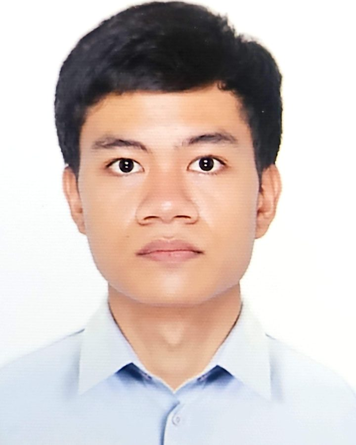
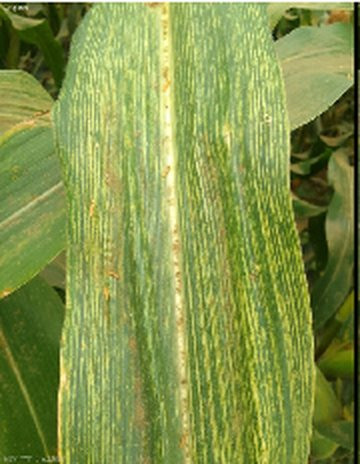
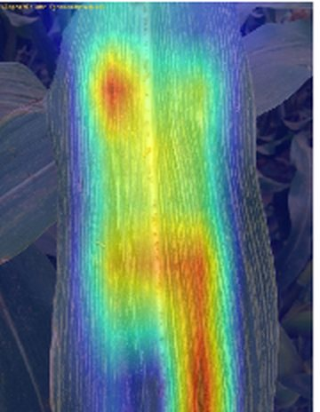
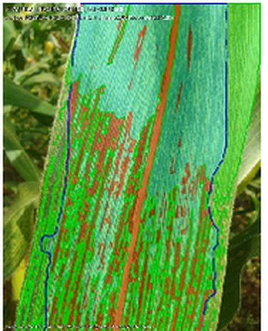

Data Science student, Angeles University Foundation
I am a fourth-year BSCS student majoring in Data Science, graduating in 2027, and I am looking for a Data Science internship. For our thesis, I built the retrieval-augmented guidance backend and contributed to the deep learning pipeline and the Android app. My coursework projects include AI agents and a text-to-SQL system built with the Gemini API.

Our thesis focused on maize streak virus, which was first reported in the Philippines in 2023. Its early symptoms can overlap with other leaf problems and nutrient stress, so it is difficult to identify by eye alone. My main part was the guidance backend, where I added response validation and fallback guidance so the app still returns usable advice when generation fails. Separately, my coursework in machine learning and agentic AI produced the smaller projects on this page.
Outside of code, I play chess, take photographs, and spend time learning new languages, both spoken and programming. On clear nights, I am usually looking up at the stars instead of a screen.
Early signs of maize streak virus (MSV) are hard to confirm by eye, and connectivity can be limited in rural areas. Our Android app takes one photo of a leaf and, entirely on the phone, checks that the photo shows maize, classifies the leaf as healthy, MSV, or maize lethal necrosis (MLN), highlights the symptoms, and estimates severity. Only the written management guidance and follow-up chat need an internet connection, because they come from a cloud backend.

An MSV-infected leaf
Grad-CAM++ attention
Symptom segmentationThe final model is a MobileNetV3-Small network that produces three outputs at once: disease class, leaf and symptom segmentation, and severity. It was trained on pseudo-labels generated by larger teacher models, and its segmentation and severity outputs were compared with a set of 501 hand-annotated images. I contributed to building and improving this pipeline, and I was one of the two severity raters.
| Speed and size | Mean CPU inference latency of 60 milliseconds, a 13.75 MB TensorFlow Lite file, and 100 percent classification agreement between the original and converted model on 50 validation samples |
| Severity | On 60 sampled images, a Spearman correlation of 0.875 with the consensus of two raters from our team, including me, who scored independently and agreed with each other at a Cohen's Kappa of 0.91 |
| Segmentation | Mean IoU of 0.75 for the leaf outline and 0.45 for symptom regions, measured against the 501 hand-annotated images |
| Classification | 64.6 percent accuracy on 27,228 held-out test images |
The classification number is the weak point, and the confusion matrix explains why. The model detects MLN well (92 percent recall) but over-predicts it, labeling many healthy leaves as MLN (healthy recall of only 32 percent). A manual check of a sample of the misclassified healthy images found genuinely healthy leaves, which ruled out labeling errors and points to a real model bias, plausibly from glare, minor discoloration, and aging leaf tissue. Our recommendations include targeted rebalancing, augmentation, and class weighting to correct it.
I built the retrieval-augmented guidance service: a Flask API on Google Cloud Run that retrieves the five most relevant passages from a knowledge base of 15 plant pathology and agricultural documents and three EPPO datasets, asks Gemini for structured bilingual advice, validates the response, and falls back to prepared static guidance when generation fails. Increasing retrieval depth from three to five passages raised RAGAS faithfulness from 0.193 to 0.353.
A domain expert rated 30 guidance cases at 4.67 out of 5 overall and judged the guidance suitable after minor revisions, but marked 23 of the 30 cases for specific corrections. The main problems included pesticide rates carried over from foreign sources and destructive or quarantine measures suggested before official confirmation. These findings defined requirements the guidance must meet before any user-facing deployment. A separate review of 15 paired responses found the Tagalog guidance much weaker than the English (2.25 versus 3.83 out of 5), so it needs complete human revision.
Built with PyTorch, TensorFlow Lite, ONNX, Grad-CAM++, Kotlin, Python, Flask, LangChain, Gemini API, ChromaDB, RAGAS, Docker, Google Cloud Run
Smaller academic projects on AI agents and language models.
One Gemini model writes a SQL query from a plain-English question, and a second model reviews it against the live database schema before it runs. If the query still fails, the agent diagnoses the error, writes a simpler fallback query, and returns a result clearly marked as partial instead of crashing.
Built with Python, Gemini API, Pydantic, SQLite
A CrewAI pipeline where one agent plans research with web search and a second writes a report using a calculator tool. The report looked polished, but the execution trace showed that both agents mostly skipped their tools, and the writer invented a revenue figure that was wrong in both runs. Reading the trace, not the final report, is what caught it.
Built with Python, CrewAI, Gemini API, DuckDuckGo Search
Two short notebooks: prompt chaining and intent-based routing with LangChain, and a comparison of keyword search against semantic retrieval with ChromaDB, including a test of whether the model admits when the answer is not in the document.
Built with Python, LangChain, Gemini API, ChromaDB, Sentence Transformers
Python, R, Java, C#, PHP, JavaScript, Kotlin, Dart, SQL, HTML, CSS, Assembly
TensorFlow, PyTorch, scikit-learn, Pandas, NumPy, NLTK, HDBSCAN, Power BI
LangChain, CrewAI, Google Gemini API, Pydantic, RAG pipelines, prompt engineering
Flask, Android (Kotlin), Flutter, Next.js 15, Supabase
MySQL, SQLite, Oracle, ChromaDB
Docker, Google Cloud Run, Google Cloud Platform, Colab, Linux, Git